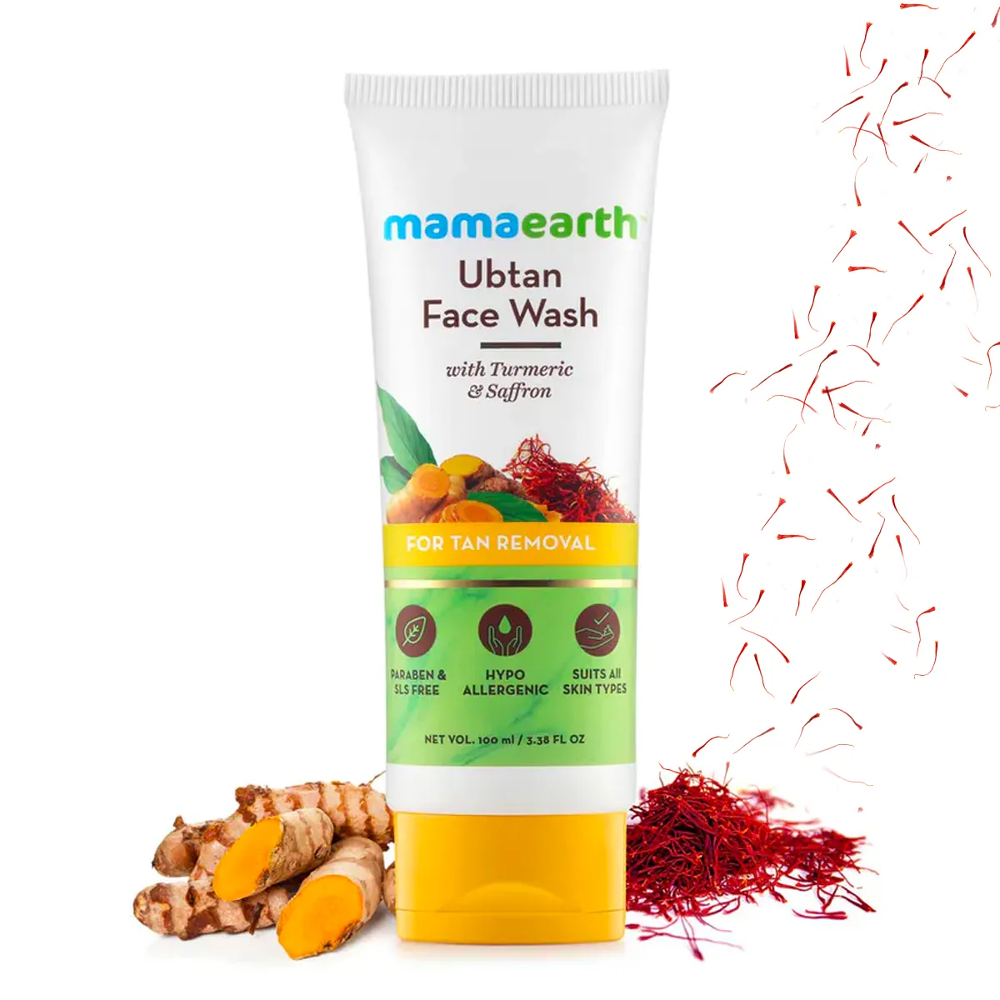

Face wash

Description
- Ubtan Face Wash for removing skin tan and giving you farer skin.
- Liquorice extract in me repairs sun damage while carrot oil removes tan from the upper layer of skin.
- I am enriched with walnut beads which exfoliate dead skin cells.
- Antioxidants in turmeric & saffron protect the skin cells from free radical damage and lighten the skin tone.
- Dermatologically tested and pH balanced, I gently take care of your skin.
- I leave skin soft and smooth .
- I do not contain any harmful chemicals like SLES, sulfates, phthalates and artificial fragrances.
Shampoo
Description
- Free from harmful sulfates, our Onion Shampoo has the goodness of Onion that helps in reducing hair fall and Plant Keratin that is gentle on the hair and keeps it clean, strong and nourished. mamaearth onion hair oil for hair regrowth.
- Strengthens Hair: Loaded with Plant Keratin, Onion Shampoo gently cleanses hair & prevents hair damage caused due to washing. It forms a protective layer that strengthens hair from within. mamaearth onion hair oil.
- Makes Hair Soft : Gentle surfactants cleanse hair & scalp without stripping. Plant Keratin prevents damage & dryness, maintains the moisture balance of hair, and leaves hair soft & smooth, and keeps the hair roots strong.

Sunscreen

Description
- With SPF 50 & PA+++ protection, the sunscreen protects the skin from UVA & UVB rays, reduces sun damage & keeps your skin in the best shape. Mama sun cream spf 50 For Men Is Suitable for Indian Weather.
- Suitable for Indian Weather : Natural ingredients like Cananga Oil protects the skin against the harsh heat of the Indian sun in both dry & humid weather. Sun Protection SPF 50 Ultra Light Indian Sunscreen with Carrot Seed as Mamaearth Sunscreen Ingredients.
- Long-Lasting Sun Protection: Rated at SPF 50, the sunscreen excludes the hassle of applying it every two hours. Reapply only after every 6 hour